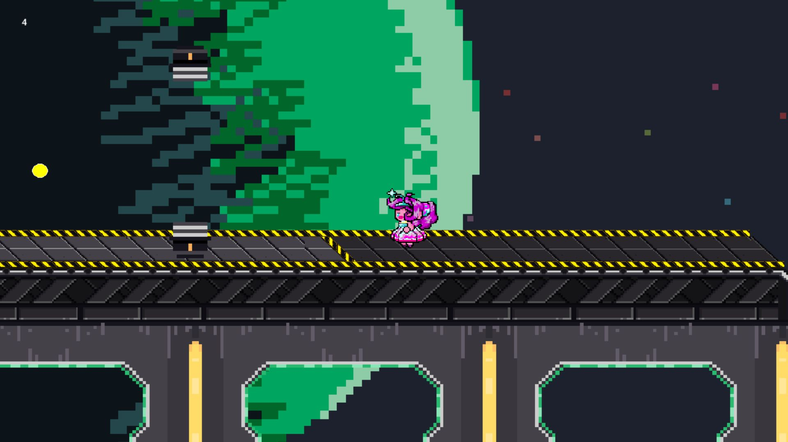
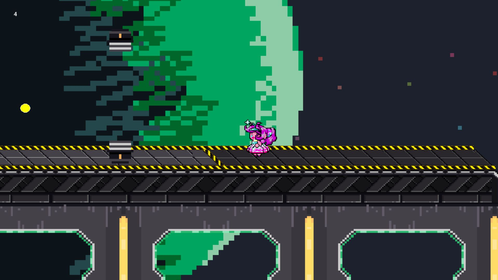

นายธนกร ศรัทธามาก
Game Developer | Programmer
Welcome to my portfolio. Here, you'll find my latest projects and skills.
2D Game Projects
Follow You (Adventure-Horror)
 

Follow You คือเกม Adventure-Horror ที่ผู้เล่นต้องพาเด็กสาวหนีปีศาจ ตัวเกมโฟกัสไปที่การสำรวจ แก้ไข Puzzle และเล่าเรื่องราวต่างๆที่ทำให้เด็กสาวคนนี้มองเห็นปีศาจที่คนอื่นมองไม่เห็น พัฒนาโดยใช้ Unity
ทีม: 3 คน | หน้าที่ของผม: Coding, Design, Sound
สิ่งที่ได้เรียนรู้:
- ระบบขยายตัวละคร 2D (กด S ซูมเข้า, กด W ซูมออก พร้อมแก้บั๊กขนาดตัวละคร)
- Scene Transition: การเก็บข้อมูล Player ระหว่างซีน
- Animation Implementation: การใส่อนิเมชัน
- Sound Design: การออกแบบเสียง
- Camera Follow System: ระบบกล้องติดตาม
เกมนี้ได้เข้าร่วม BU GAME ON ซึ่งเป็นรายการแรกที่เราสมัครไป โดยได้ส่งไอเดียให้ทางผู้จัดและได้เข้าร่วมงาน ถึงแม้ว่าเราจะไม่ได้รับรางวัลอะไรเลย แต่มันทำให้ผมไม่กลัวเรื่องยากๆ อีกต่อไป และทำให้ผมได้เรียนรู้ทักษะใหม่ๆ รวมทั้งเข้าใจในระบบต่างๆ ของการวางแผนงานให้มีประสิทธิภาพมากขึ้น
Doodle Trails (2.5D)

เกมแนว Platformer ผสม Puzzle ที่ใช้ไอเดียของสมุดวาดภาพ พัฒนาโดยใช้ Unity
ทีม: 5 คน | หน้าที่ของผม: Coding, Map Design, Player Movement, Score System
สิ่งที่ได้เรียนรู้:
- ตั้งค่าการเคลื่อนที่ของ Player บนแกน Z
- สร้างระบบ Loop Map ที่ทำให้พื้นเกมต่อเนื่องกันไปเรื่อยๆ และลบพื้นที่เก่าเพื่อลด Lag
- ออกแบบ Obstacles (อุปสรรคในเกม) โดยใช้ Spawn Point 3 จุด และระบบสุ่ม (Random 5:3)
- Sound Design: การออกแบบเสียง
- เชื่อมต่อระบบคะแนนกับ Firebase เพื่อบันทึกระยะทางของ Player
Unnamed Project
โปรเจคที่ทำให้เข้าใจพื้นฐานของ GameMaker Studio
ทีม: 7 คน | หน้าที่ของผม: Coding, Map Design
สิ่งที่ได้เรียนรู้:
- พัฒนาระบบ Player Movement
- ออกแบบ Map Layout ให้เหมาะกับการเล่น
- Animation Implementation: การใส่อนิเมชัน
- สร้าง Stage Clear Condition (เงื่อนไขผ่านด่าน): ผู้เล่นต้องเก็บ Ball Items ให้ครบก่อนจึงจะผ่านด่านได้
Slime

โปรเจคแรกที่ใช้ Unity ทำให้เข้าใจพื้นฐานของ 2D Game Development
ทีม: 5 คน | หน้าที่ของผม: Coding, Map Design
สิ่งที่ได้เรียนรู้:
- เริ่มต้นใช้งาน Unity (เป็นเกมแรกที่พัฒนา)
- ออกแบบ 2D Map ให้ใช้พื้นที่น้อยลงแต่ยังเล่นสนุก
- พัฒนา AI Following System โดยใช้ Circle Collider 2D ตรวจจับระยะ หากผู้เล่นออกจากระยะ AI จะหยุดติดตาม
3D Game Projects
God Fall


เกม 3D Open-world ที่มีระบบเควสและการต่อสู้แบบ RPG
ทีม: 3 คน | หน้าที่ของผม: Coding
สิ่งที่ได้เรียนรู้:
- พัฒนาระบบ Quest System
- ใช้แนวคิด OOP (Object-Oriented Programming) ในการจัดการค่าพลังชีวิต (HP System)